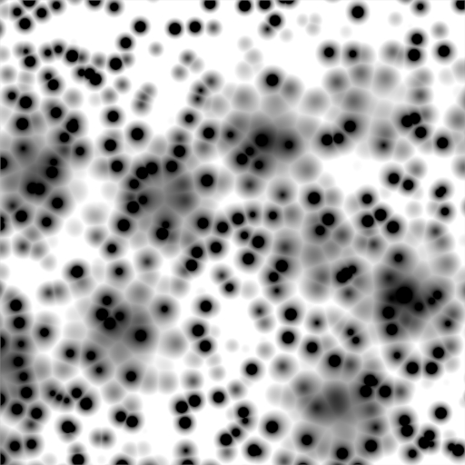
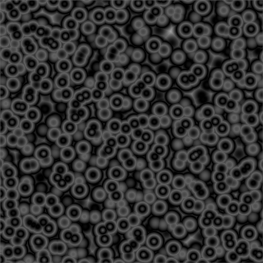

Масгрейв -- Musgrave¶
Текстура Musgrave використовується для генерування вигляду органічних матеріалів, але є дуже гнучкою. Ви можете робити за допомогою неї майже все.
Musgrave Texture panels.
Опції¶
- Тип -- Type
Ця процедурна текстура має п'ять типів шуму, на яких може базуватися результатний узор, і вони доступні для вибору за допомогою меню вгорі панелі. Цими п'ятьма типами є:
- Гетеро Місцевість -- Hetero Terrain
- Фрактальний Броунівський Рух -- Fractal Brownian Motion (fBm)
- Гібрид Мультифрактал -- Hybrid Multifractal
- Загострений Мультифрактал -- Ridged Multifractal
- Мультифрактал -- Multifractal
Ці типи шуму визначають спосіб, яким Blender'а нашаровує послідовні копії однакового узору один поверх іншого, варіюючи контраст та масштаб.
Приклади з уставами Basis: Voronoi: F1, Dimension: 0.5, Lacunarity: 0.15, Octave: 2.0.

Hetero Terrain. |

Fractal Brownian Motion. |

Hybrid Multifractal. |

Ridged Multifractal. |

Multifractal. |
{kind=link}
{kind=link}
Головні типи шуму мають чотири характеристики:
- Розмір -- Dimension
- Розмір фракталу керує контрастом шару відносно попереднього шару у текстурі. Чим вищий розмір фракталу, тим вищий контраст між кожним шаром, і звідси більше деталей показуються у текстурі.
- Лакунарність -- Lacunarity
- Лакунарність керує масштабуванням кожного шару текстури Musgrave, що означає, що кожен додатковий шар буде мати масштаб, який є інверсією значення, яке показується на кнопці. наприклад, Lacunarity = 2 --> Scale = 1/2 оригіналу.
- Октави -- Octaves
- Октави керують кількість разів накладання оригінального узору шуму на себе та масштабування/контрастування за допомогою розміру фракталу та устав лакунарності.
- Інтенсивність -- Intensity
- Інтенсивність світлості. Для Hetero Terrain називається Offset.
Типи Hybrid Multifractal та Ridged Multifractal мають такі додаткові устави:
- Зсув -- Offset
- Обидва мають кнопку "Offset", що слугує в якості коригувальника «рівня моря» та вказує на висоту бази результатної карти вигинів. Значення вигинів нижче цього порогу будуть повернуті як нуль.
- Підсил -- Gain
- Устава, яка визначає діапазон значень, створюваних цією функцією. Чим вище це число, тим більший діапазон. Це швидкий спосіб привнесення додаткових деталей у текстуру, де екстремуми, зазвичай, відсікаються.